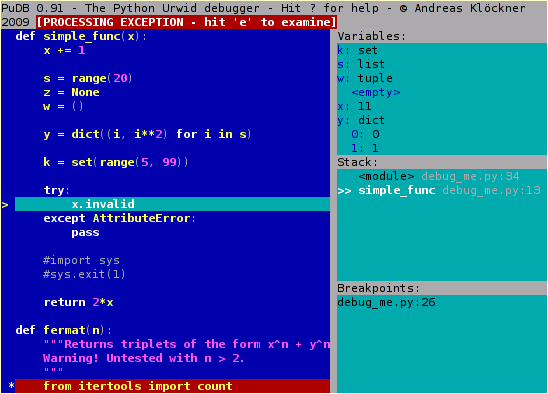

pudb 2016.2
A full-screen, console-based Python debugger
PuDB is a full-screen, console-based visual debugger for Python.
Its goal is to provide all the niceties of modern GUI-based debuggers in a more lightweight and keyboard-friendly package. PuDB allows you to debug code right where you write and test it–in a terminal. If you’ve worked with the excellent (but nowadays ancient) DOS-based Turbo Pascal or C tools, PuDB’s UI might look familiar.
Here’s a screenshot:
You may watch a screencast, too.
Features
- Syntax-highlighted source, the stack, breakpoints and variables are all visible at once and continuously updated. This helps you be more aware of what’s going on in your program. Variable displays can be expanded, collapsed and have various customization options.
- Simple, keyboard-based navigation using single keystrokes makes debugging quick and easy. PuDB understands cursor-keys and Vi shortcuts for navigation. Other keys are inspired by the corresponding pdb commands.
- Use search to find relevant source code, or use “m” to invoke the module browser that shows loaded modules, lets you load new ones and reload existing ones.
- Breakpoints can be set just by pointing at a source line and hitting “b” and then edited visually in the breakpoints window. Or hit “t” to run to the line under the cursor.
- Drop to a Python shell in the current environment by pressing “!”.
- PuDB places special emphasis on exception handling. A post-mortem mode makes it easy to retrace a crashing program’s last steps.
- IPython integration (see wiki)
- Should work with Python 2.6 and newer, including Python 3.
Installing
Install PuDB using the command:
pip install pudb
If you are using Python 2.5, PuDB version 2013.5.1 is the last version to support that version of Python. urwid 1.1.1 works with Python 2.5, newer versions do not.
Getting Started
To start debugging, simply insert:
from pudb import set_trace; set_trace()
A shorter alternative to this is:
import pudb; pu.db
Or, if pudb is already imported, just this will suffice:
pu.db
Insert either of these snippets into the piece of code you want to debug, or run the entire script with:
pudb my-script.py
or, in Python 3:
pudb3 my-script.py
This is equivalent to:
python -m pudb.run my-script.py
which is useful if you want to run PuDB in a version of Python other than the one you most recently installed PuDB with.
Remote debugging
Rudimentary remote debugging is also supported:
from pudb.remote import set_trace set_trace(term_size=(80, 24))
At this point, the debugger will look for a free port and wait for a telnet connection:
pudb:6899: Please telnet into 127.0.0.1 6899. pudb:6899: Waiting for client...
Documentation and Support
PuDB has a wiki, where documentation and debugging wisdom are collected.
PuDB also has a mailing list that you may use to submit patches and requests for help. You can also send a pull request to the GitHub repository
Attaching to Running Code
An alternative to using set_trace is to use:
from pudb import set_interrupt_handler; set_interrupt_handler()
at the top of your code. This will set SIGINT (i.e., Ctrl-c) to run set_trace, so that typing Ctrl-c while your code is running will break the code and start debugging. See the docstring of set_interrupt_handler for more information.
Programming PuDB
At the programming language level, PuDB displays the same interface as Python’s built-in pdb module. Just replace pdb with pudb. (One exception: run is called runstatement.)
License and Dependencies
PuDB is distributed under the MIT license. It relies on the following excellent pieces of software:
Development Version
You may obtain the development version using the Git version control tool.:
git clone http://git.tiker.net/trees/pudb.git
You may also browse the code online.
The repository is also mirrored at GitHub.
FAQ
Q: I navigated to the Variables/Stack/Breakpoints view. How do I get back to the source view?
A: Press your left arrow key.
Q: Where are breakpoints stored?
A: All PuDB information is stored in a location specified by the XDG Base Directory Specification. Usually, it is ~/.config/pudb. Breakpoints are stored in a file called saved-breakpoints. Also in this location are the shell history from the ! shell (shell-history) and the PuDB settings (pudb.cfg).
Q: I killed PuDB and now my terminal is broken. How do I fix it?
A: Type the reset command (even if you cannot see what you are typing, it should work). If this happens on a regular basis, please report it as a bug.
| File | Type | Py Version | Uploaded on | Size | |
|---|---|---|---|---|---|
| pudb-2016.2.tar.gz (md5) | Source | 2016-06-07 | 49KB | ||
- Author: Andreas Kloeckner
- Home Page: https://github.com/inducer/pudb
-
Categories
- Development Status :: 4 - Beta
- Environment :: Console
- Environment :: Console :: Curses
- Intended Audience :: Developers
- License :: OSI Approved :: MIT License
- Natural Language :: English
- Operating System :: POSIX
- Operating System :: Unix
- Programming Language :: Python
- Programming Language :: Python :: 2
- Programming Language :: Python :: 2.6
- Programming Language :: Python :: 2.7
- Programming Language :: Python :: 3
- Programming Language :: Python :: 3.3
- Programming Language :: Python :: 3.4
- Programming Language :: Python :: 3.5
- Topic :: Software Development
- Topic :: Software Development :: Debuggers
- Topic :: Software Development :: Quality Assurance
- Topic :: System :: Recovery Tools
- Topic :: System :: Software Distribution
- Topic :: Terminals
- Topic :: Utilities
- Package Index Owner: inducer77
- DOAP record: pudb-2016.2.xml